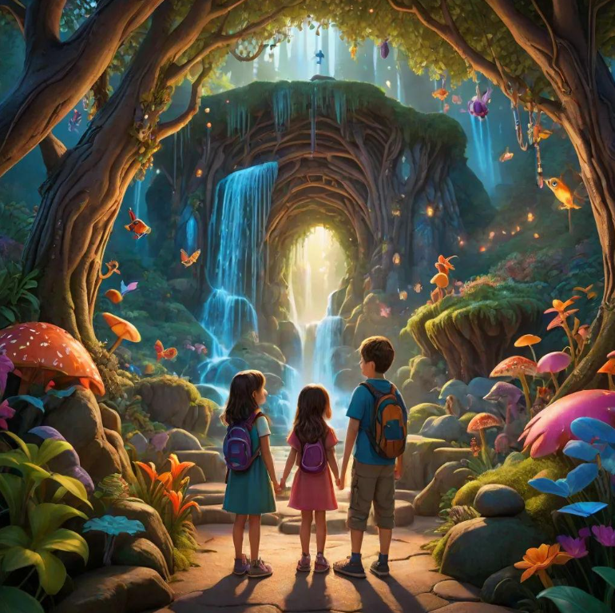
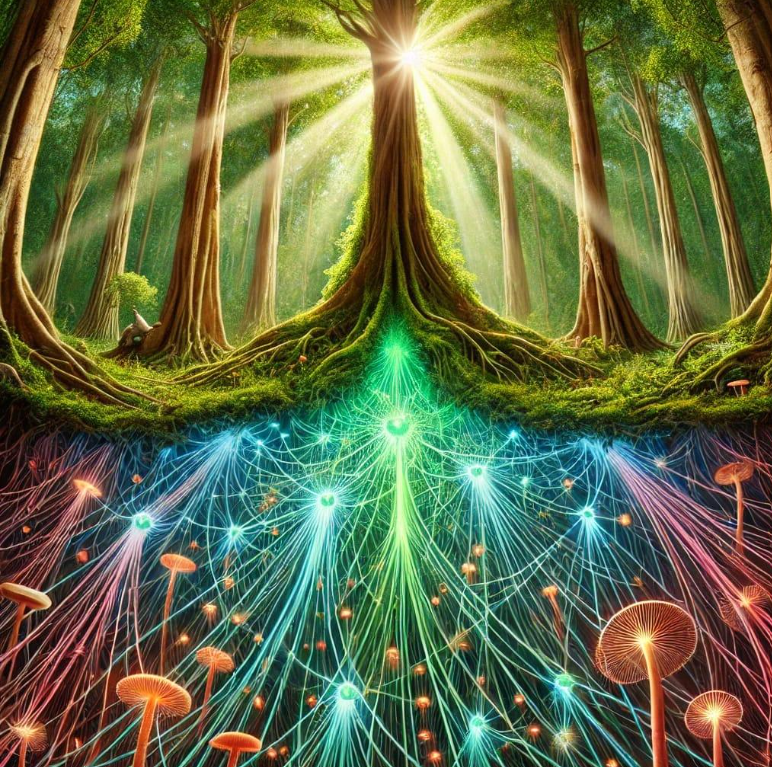
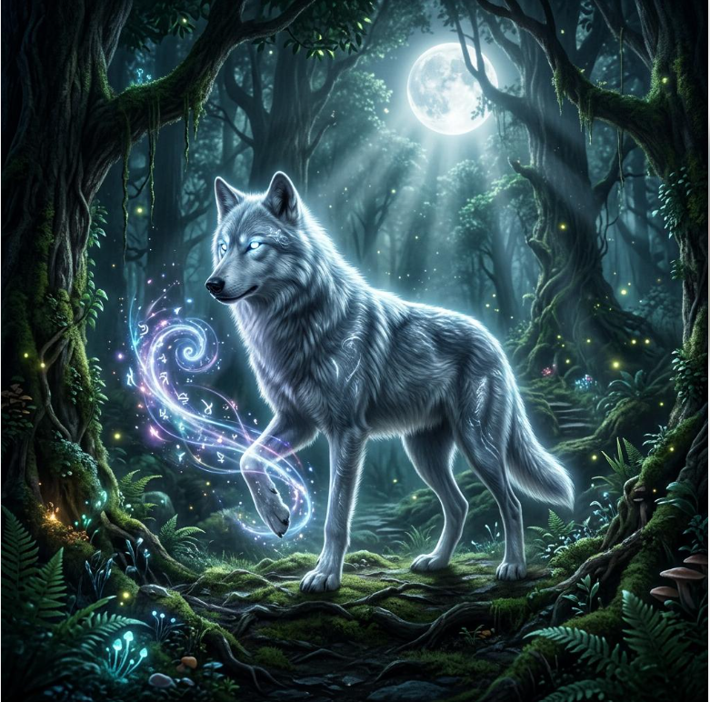
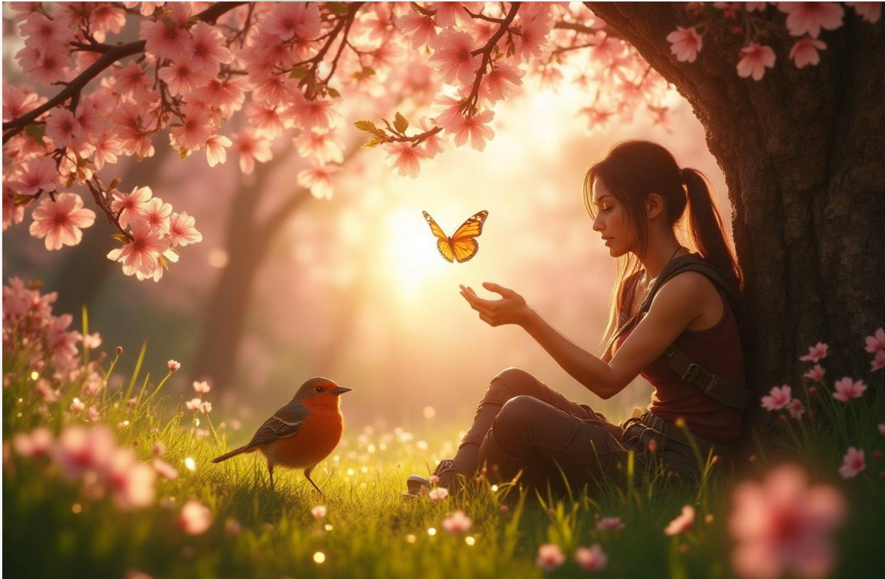
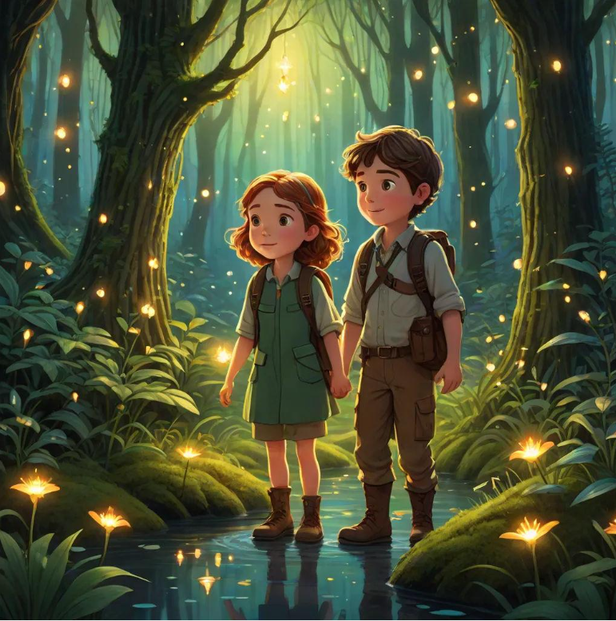

Expedição 420 • Edição Aventura • Descubra • Reflita • Transforme
Seu mundo. Suas escolhas. Seu caminho.
Sete jornadas com missões, investigação de pistas, organização de ações, desafios de prioridades e histórias de decisões. Cada jornada tem seis capítulos com dez desafios interativos.
7módulos preservados
420desafios
0desafios concluídos
0fases da versão anterior
Seu progresso: 0%
🎭 Escolha seu explorador
Seu personagem acompanha as missões. A escolha fica salva somente neste navegador.
📚 Biblioteca de conhecimento
Explore os artigos e módulos educativos
Aprenda com conteúdos ilustrados sobre emoções, ciência, natureza, espiritualidade, aprendizagem e desenvolvimento pessoal.

🌿 Natureza e Sabedoria InteriorEcossistemas, percepção e conexão com a natureza.
🔬 Espiritismo e CiênciaPesquisas, hipóteses e conhecimentos científicos.🧠 Neurociência e AprendizagemMemória, intuição e estratégias para aprender.
✨ Aventuras da EspiritualidadeReflexões e descobertas sobre espiritualidade.
🌱 Reforma ÍntimaValores, escolhas, gentileza e autoconhecimento.
💜 Traumas, Superação e Lei de Causa e EfeitoEmoções, apoio, ressignificação e responsabilidade sem culpa.Escolha sua jornada
Sobre o progresso
As estrelas ficam apenas neste navegador. O progresso antigo é mantido como histórico quando você atualiza no mesmo navegador. Não há contas, ranking público ou coleta de respostas pessoais.
Abrir versão anterior📍 Situação